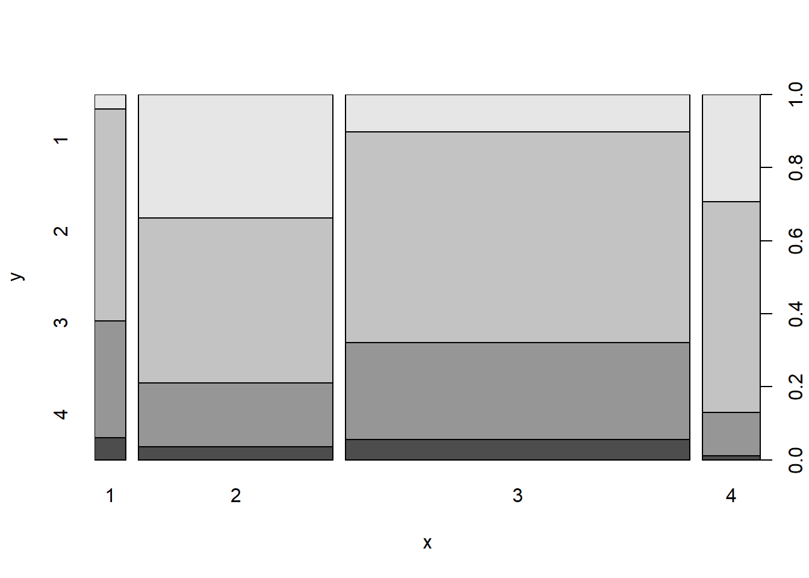

Error in library(caret): there is no package called 'caret'
Code
library(ROCR)
Error in library(ROCR): there is no package called 'ROCR'
Code
library(rpart)library(rpart.plot)
Error in library(rpart.plot): there is no package called 'rpart.plot'
Code
library(rattle)
Error in library(rattle): there is no package called 'rattle'
Code
library(ggplot2)library(plotly)
Attaching package: 'plotly'
The following object is masked from 'package:ggplot2':
last_plot
The following object is masked from 'package:stats':
filter
The following object is masked from 'package:graphics':
layout
Code
knitr::opts_chunk$set(echo =TRUE)
Introduction
Credit risk is defined as the risk of loss resulting from the failure by a borrower to repay the principal and interest owed to the leader.So the purpose of credit analysis is to determine the creditworthiness of borrowers by measuring the risk of loss that the lender is exposed to.When calculating the credit risk of a particular borrower, lenders consider various factors like analyze different documents, such as the borrower’s income statement, balance sheet, credit reports, and other documents that reveal the financial situation of the borrower. to evaluate the characteristics of the borrower and conditions of the loan to estimate the probability of default and the subsequent risk of financial loss.
Research Question
Q1. How credit risk depends on the age of the person? Q2. Does credit risk depends on occupation?
The purpose of this project is to take a data set of loan applications and build a predictive model for making a decision as to whether to approve a loan based on the applicant’s profile.
Hypothesis
For this research, the quantitative data was used. Based on probability techniques, this research has chosen to use random sampling method based on documents and records of applicants for a German credit In this study dependent variables are divided in two groups. Good and bad legal customers; the aim of this study is to estimate the important independent variables. In this regard, good customer is a company which repays its loan plus the profit at the due date and in contrast, bad customer is a company which don’t repay at the due date. To differentiate between good and bad customers in our statistical analysis calculations, 0 is illustrating good customers and 1 is illustrating bad customers. H1: There is a significant and positive relationship between interest rate and credit risk. H2: There is a significant and positive relationship between age and credit risk. H3: There is a significant and positive relationship between history of legal customer relationship with the bank of repayment and credit risk.
Dataset
The data for the analysis is a set of 1000 German credit applications with 20 different attributes of the applicant. The original data is from the UCI Machine Learning Repository but the CSV version used in this analysis can be found from the Penn State University website (https://onlinecourses.science.psu.edu/stat857/node/215).
The following code can be used to determine if an applicant is credit worthy and if he (or she) represents a good credit risk to the lender. Several methods are applied to the data to help make this determination. We will look at them in this case.
Rows: 1000 Columns: 21
── Column specification ────────────────────────────────────────────────────────
Delimiter: ","
dbl (21): Creditability, Account Balance, Duration of Credit (month), Paymen...
ℹ Use `spec()` to retrieve the full column specification for this data.
ℹ Specify the column types or set `show_col_types = FALSE` to quiet this message.
Code
str(credit)
spc_tbl_ [1,000 × 21] (S3: spec_tbl_df/tbl_df/tbl/data.frame)
$ Creditability : num [1:1000] 1 1 1 1 1 1 1 1 1 1 ...
$ Account Balance : num [1:1000] 1 1 2 1 1 1 1 1 4 2 ...
$ Duration of Credit (month) : num [1:1000] 18 9 12 12 12 10 8 6 18 24 ...
$ Payment Status of Previous Credit: num [1:1000] 4 4 2 4 4 4 4 4 4 2 ...
$ Purpose : num [1:1000] 2 0 9 0 0 0 0 0 3 3 ...
$ Credit Amount : num [1:1000] 1049 2799 841 2122 2171 ...
$ Value Savings/Stocks : num [1:1000] 1 1 2 1 1 1 1 1 1 3 ...
$ Length of current employment : num [1:1000] 2 3 4 3 3 2 4 2 1 1 ...
$ Instalment per cent : num [1:1000] 4 2 2 3 4 1 1 2 4 1 ...
$ Sex & Marital Status : num [1:1000] 2 3 2 3 3 3 3 3 2 2 ...
$ Guarantors : num [1:1000] 1 1 1 1 1 1 1 1 1 1 ...
$ Duration in Current address : num [1:1000] 4 2 4 2 4 3 4 4 4 4 ...
$ Most valuable available asset : num [1:1000] 2 1 1 1 2 1 1 1 3 4 ...
$ Age (years) : num [1:1000] 21 36 23 39 38 48 39 40 65 23 ...
$ Concurrent Credits : num [1:1000] 3 3 3 3 1 3 3 3 3 3 ...
$ Type of apartment : num [1:1000] 1 1 1 1 2 1 2 2 2 1 ...
$ No of Credits at this Bank : num [1:1000] 1 2 1 2 2 2 2 1 2 1 ...
$ Occupation : num [1:1000] 3 3 2 2 2 2 2 2 1 1 ...
$ No of dependents : num [1:1000] 1 2 1 2 1 2 1 2 1 1 ...
$ Telephone : num [1:1000] 1 1 1 1 1 1 1 1 1 1 ...
$ Foreign Worker : num [1:1000] 1 1 1 2 2 2 2 2 1 1 ...
- attr(*, "spec")=
.. cols(
.. Creditability = col_double(),
.. `Account Balance` = col_double(),
.. `Duration of Credit (month)` = col_double(),
.. `Payment Status of Previous Credit` = col_double(),
.. Purpose = col_double(),
.. `Credit Amount` = col_double(),
.. `Value Savings/Stocks` = col_double(),
.. `Length of current employment` = col_double(),
.. `Instalment per cent` = col_double(),
.. `Sex & Marital Status` = col_double(),
.. Guarantors = col_double(),
.. `Duration in Current address` = col_double(),
.. `Most valuable available asset` = col_double(),
.. `Age (years)` = col_double(),
.. `Concurrent Credits` = col_double(),
.. `Type of apartment` = col_double(),
.. `No of Credits at this Bank` = col_double(),
.. Occupation = col_double(),
.. `No of dependents` = col_double(),
.. Telephone = col_double(),
.. `Foreign Worker` = col_double()
.. )
- attr(*, "problems")=<externalptr>
Data cleaning
There are columns which contain continuous variables rather than categorical data (duration of credit, credit amount and age). This is potentially important information in deciding credit risk and therefore one solution is to transform the data into categorical variables using the cut function.
Before starting the modeling phase, it is important to explore the data to get an idea of any patterns or areas of interest.
The first thing is to examine how many examples of good and bad credit risk there are.
Code
Plot1 <-ggplot(Credit_new1, aes(Creditability)) +geom_bar(fill ="pink") +theme(axis.title.x=element_blank()) +theme(axis.title.y=element_blank()) +geom_text(aes(label=..count..),stat='count',position=position_dodge(0.9),vjust=-0.2) +scale_y_continuous(breaks=seq(0,700,100)) +scale_x_discrete(labels =c("Bad","Good")) +ggtitle("Count of Good and Bad Credit Risks")Plot1
Warning: The dot-dot notation (`..count..`) was deprecated in ggplot2 3.4.0.
ℹ Please use `after_stat(count)` instead.
The plot shows 300 examples of bad credit risk applicants versus 700 good. This is something that should be noted later when splitting the data set into training and test sets.
The next step is to explore some of the variables in the data. For example, it might be a fair assumption that amount of total savings is strongly linked to the credit risk of the applicant i.e. an applicant with little money in their account is a higher credit risk than one with a lot of savings? Another plot can be produced to confirm this.
plot2 <-ggplot(Credit_new1, aes(Occupation, fill = Creditability), stat="identity") +geom_bar() +scale_fill_manual(values =c("blue", "green"), labels=c("Bad","Good")) +theme(axis.title.x=element_blank()) +theme(axis.title.y=element_blank()) +scale_y_continuous(breaks=seq(0,700,100)) +scale_x_discrete(labels =c("Unemployed", "Unskilled", "Skilled", "Management")) +theme(axis.text.x =element_text(angle =45, hjust =1, size =10)) +theme(axis.text.y =element_text(size =10)) +theme(legend.text=element_text(size=10)) +theme(legend.title=element_text(size=12)) +ggtitle("Good and Bad Credit Risks by Occupation")plot2
There appears to be less of a link with occupation. Most of the applicants come under ‘skilled employee’ but the credit ability of unskilled employees and management/highly qualified employees does not appear significantly different. However further statistical modeling is needed to support this initial analysis.
Finally, some exploration can be performed on one of the new categorical variables created above. This example will look at age.
Code
plot3 <-ggplot(Credit_new1, aes(Age.years, fill = Creditability), stat="identity") +geom_bar() +scale_fill_manual(values =c("pink", "green"), labels=c("Bad","Good")) +theme(axis.title.x=element_blank()) +theme(axis.title.y=element_blank()) +scale_y_continuous(breaks=seq(0,700,100)) +scale_x_discrete(labels =c("18-25", "26-40", "41-60", "60+")) +theme(axis.text.x =element_text(angle =45, hjust =1, size =10)) +theme(axis.text.y =element_text(size =10)) +theme(legend.text=element_text(size=10)) +theme(legend.title=element_text(size=12)) +ggtitle("Good and Bad Credit Risks by Age")plot3

This analysis indicates perhaps some decrease in credit risk with age. However there is probably a lot of correlation between age and other factors such as savings and property so further statistical analysis is needed.
Statistical modeling
Logistic regression
Logistic regression (aka logit regression or logit model)is a regression model where the response variable Y is categorical. Logistic regression allows us to estimate the probability of a categorical response based on one or more predictor variables (X). It allows one to say that the presence of a predictor increases (or decreases) the probability of a given outcome by a specific percentage. This tutorial covers the case when Y is binary — that is, where it can take only two values, “0” and “1”, which represent outcomes such as pass/fail, win/lose, alive/dead or healthy/sick. Cases where the dependent variable has more than two outcome categories may be analysed with multinomial logistic regression, or, if the multiple categories are ordered, in ordinal logistic regression.
The first step before applying models is to create training and test data sets. The data will be split 70/30 and spread evenly between good and bad credit risks using the CreateDataPartition function in the caret package.
Error in createDataPartition(Credit_new1$Creditability, p = 0.7, list = FALSE): could not find function "createDataPartition"
Code
train <- Credit_new1[inTraining,]
Error in `[.tbl_df`(Credit_new1, inTraining, ): object 'inTraining' not found
Code
test <- Credit_new1[-inTraining,]
Error in `[.tbl_df`(Credit_new1, -inTraining, ): object 'inTraining' not found
The first model of logistic regression using the glm() function where we are predicting creditability with different variables of the dataset.
Code
set.seed(2800)lmModel <-glm(Creditability ~ ., family = binomial, data = train)
Error in is.data.frame(data): object 'train' not found
Code
# Fit model to test setlmFit <-predict(lmModel, type ="response", test)
Error in predict(lmModel, type = "response", test): object 'lmModel' not found
Code
# Compare predictions to test setlmPred <-prediction(lmFit, test$Creditability)
Error in prediction(lmFit, test$Creditability): could not find function "prediction"
Code
# Create Area Under the Curve (AUC) plotAUC <-performance(lmPred, 'tpr', 'fpr')
Error in performance(lmPred, "tpr", "fpr"): could not find function "performance"
Code
plot(AUC)
Error in plot(AUC): object 'AUC' not found
Code
performance(lmPred, measure ='auc')@y.values[[1]]
Error in performance(lmPred, measure = "auc"): could not find function "performance"
The second model of logistic regression using the glm() function where we are predicting creditability with age,occupation and value saving variables of the dataset.
Code
set.seed(2800)lmModel <-glm(Creditability ~ Age.years + Occupation + Value.Savings.Stocks, family = binomial, data = train)
Error in is.data.frame(data): object 'train' not found
Code
# Fit model to test setlmFit <-predict(lmModel, type ="response", test)
Error in predict(lmModel, type = "response", test): object 'lmModel' not found
Code
# Compare predictions to test setlmPred <-prediction(lmFit, test$Creditability)
Error in prediction(lmFit, test$Creditability): could not find function "prediction"
Code
# Create Area Under the Curve (AUC) plotAUC <-performance(lmPred, 'tpr', 'fpr')
Error in performance(lmPred, "tpr", "fpr"): could not find function "performance"
Code
plot(AUC)
Error in plot(AUC): object 'AUC' not found
Code
performance(lmPred, measure ='auc')@y.values[[1]]
Error in performance(lmPred, measure = "auc"): could not find function "performance"
On comparing first model and second model based on AUC it shows Model one has a accuracy of 80 % while Model second has a accuracy of 61%. Based on these two models , We can conculde that Model one is the best model with predictor variables to predict the credit risk.
References
1.Al-Tamimi, H. and Al-Mazrooei, M. (2007), “Banks’ risk management: a comparison study of UAE national and foreign banks”, The Journal of Risk Finance, Vol. 8 No. 4, pp. 394-409. 2.Angelini, E., di Tollo, G., & Roli, A. (2008). A neural network approach for credit risk evaluation. The Quarterly Review of Economics and Finance, 48(4), 733-755. http://dx.doi.org/10.1016/j.qref.2007.04.001. 3.Beatty, A., and S. Liao. 2011. Do Delays in Expected Loss Recognition Affect Banks’ Willingness to Lend? Journal of Accounting & Economics 52 (1): 1-20. DOI: 10.1016/j.jacceco.2011.02.002 4.Eletter, S. F., & Yaseen, S. G. (2010). Applying Neural Networks for Loan Decisions in the Jordanian Commercial Banking System. International Journal of Computer Science and Network Security, 10(1), 209-214. 5.Hornik, K., Stinchcombe, M., & White, H. (1989). Multilayer feed forward networks are universal approximators. Neural Networks, 2(5), 359-366.http://dx.doi.org/10.1016/0893-6080(89)90020-8 6.Ghodselahi, A., & Amirmadhi, A. (2011). Application of Artificial Intelligence Techniques for Credit Risk Evaluation. International Journal of Modeling and Optimization, 1(3), 243-249. http://dx.doi.org/10.7763/ IJMO.2011.V1.43 7.Gouvêa, M. A., & Gonçalves, E. B. (2007). Credit Risk Analysis Applying Logistic Regression, Neural Networks and Genetic Algorithms Models. Paper presented at the Production and Operations Management Society (POMS), Dallas, Texas, U.S.A. 8.Hall, M. J. B., Muljawan, D., Suprayogi, & Moorena, L. (2009). Using the artificial neural network to assess bank credit risk: a case study of Indonesia. Applied Financial Economics, 19(22), 1825-1846. http://dx.doi.org/10.1080/09603100903018760 9.Khashman, A. (2010). Neural networks for credit risk evaluation: Investigation of different neural models and learning schemes. Expert Syst. Appl., 37(9), 6233-6239. http://dx.doi.org/10.1016/ j.eswa.2010.02.101 10. Matoussi, H. & Abdelmoula, A. (2009). Using a Neural Network-Based Methodology for Credit–Risk Evaluation of a Tunisian Bank. Middle Eastern Finance and Economics, 4, 117-140
Source Code
---title: "Final Project Proposal"author: "Niyati Sharma"description: Second proposal for my final projectdate: "11/20/2022"format: html: toc: true code-fold: true code-copy: true code-tools: truecategories: - finalpart1 - Niyati Sharma---```{r}library(tidyverse)library(dplyr)library(ggplot2)library(cowplot)library(caret)library(ROCR)library(rpart)library(rpart.plot)library(rattle)library(ggplot2)library(plotly)knitr::opts_chunk$set(echo =TRUE)```## IntroductionCredit risk is defined as the risk of loss resulting from the failure by a borrower to repay the principal and interest owed to the leader.So the purpose of credit analysis is to determine the creditworthiness of borrowers by measuring the risk of loss that the lender is exposed to.When calculating the credit risk of a particular borrower, lenders consider various factors like analyze different documents, such as the borrower’s income statement, balance sheet, credit reports, and other documents that reveal the financial situation of the borrower. to evaluate the characteristics of the borrower and conditions of the loan to estimate the probability of default and the subsequent risk of financial loss.## Research QuestionQ1. How credit risk depends on the age of the person?Q2. Does credit risk depends on occupation?The purpose of this project is to take a data set of loan applications and build a predictive model for making a decision as to whether to approve a loan based on the applicant’s profile. ## HypothesisFor this research, the quantitative data was used. Based on probability techniques, this research has chosen to use random sampling method based on documents and records of applicants for a German credit In this study dependent variables are divided in two groups. Good and bad legal customers; the aim of this study is to estimate the important independent variables. In this regard, good customer is a company which repays its loan plus the profit at the due date and in contrast, bad customer is a company which don’t repay at the due date. To differentiate between good and bad customers in our statistical analysis calculations, 0 is illustrating good customers and 1 is illustrating bad customers. H1: There is a significant and positive relationship between interest rate and credit risk.H2: There is a significant and positive relationship between age and credit risk.H3: There is a significant and positive relationship between history of legal customer relationship with the bank of repayment and credit risk.## DatasetThe data for the analysis is a set of 1000 German credit applications with 20 different attributes of the applicant. The original data is from the UCI Machine Learning Repository but the CSV version used in this analysis can be found from the Penn State University website (https://onlinecourses.science.psu.edu/stat857/node/215).The following code can be used to determine if an applicant is credit worthy and if he (or she) represents a good credit risk to the lender. Several methods are applied to the data to help make this determination. We will look at them in this case.```{r}library(readr)credit <-read_csv("_data/german_credit.csv")str(credit)```# Data cleaningThere are columns which contain continuous variables rather than categorical data (duration of credit, credit amount and age). This is potentially important information in deciding credit risk and therefore one solution is to transform the data into categorical variables using the cut function.```{r}#handle spaces in column nameCredit_new1 <- credit # Duplicate datacolnames(Credit_new1) <-gsub(" ", ".", colnames(Credit_new1))# Rename variable namescolnames(Credit_new1)[colnames(Credit_new1)%in%c("Duration.of.Credit.(month)","Value.Savings/Stocks","Sex.&.Marital.Status","Age.(years)")] <-c("Duration.of.Credit.month","Value.Savings.Stocks","Sex.Marital.Status", "Age.years")Credit_new1 ``````{r}Credit_new1$Duration.of.Credit.month <-cut(as.numeric(Credit_new1$Duration.of.Credit.month), c(0,12,18,24,Inf), labels =c(1:4))Credit_new1$Credit.Amount <-cut(as.numeric(Credit_new1$Credit.Amount), c(0,1000,5000,10000,Inf), labels =c(1:4))Credit_new1$Age.years <-cut(as.numeric(Credit_new1$Age.years), c(18,25,40,60,Inf), labels =c(1:4))head(Credit_new1[,c(3,6,14)],5)```Finally, the remaining columns can be converted to factors.```{r}for(i in1:21){Credit_new1[,i] <-as.factor(as.numeric(unlist(Credit_new1[,i])))}print(Credit_new1)```## Exploratory analysisBefore starting the modeling phase, it is important to explore the data to get an idea of any patterns or areas of interest.The first thing is to examine how many examples of good and bad credit risk there are.```{r}Plot1 <-ggplot(Credit_new1, aes(Creditability)) +geom_bar(fill ="pink") +theme(axis.title.x=element_blank()) +theme(axis.title.y=element_blank()) +geom_text(aes(label=..count..),stat='count',position=position_dodge(0.9),vjust=-0.2) +scale_y_continuous(breaks=seq(0,700,100)) +scale_x_discrete(labels =c("Bad","Good")) +ggtitle("Count of Good and Bad Credit Risks")Plot1```The plot shows 300 examples of bad credit risk applicants versus 700 good. This is something that should be noted later when splitting the data set into training and test sets.The next step is to explore some of the variables in the data. For example, it might be a fair assumption that amount of total savings is strongly linked to the credit risk of the applicant i.e. an applicant with little money in their account is a higher credit risk than one with a lot of savings? Another plot can be produced to confirm this.```{r}print(Credit_new1$Value.Savings.Stocks)``````{r}plot1 <-ggplot(Credit_new1, aes(Value.Savings.Stocks, fill = Creditability), stat="identity") +geom_bar() +scale_fill_manual(values =c("blue", "orange"), labels=c("Bad","Good")) +theme(axis.title.x=element_blank()) +theme(axis.title.y=element_blank()) +scale_y_continuous(breaks=seq(0,700,100)) +scale_x_discrete(labels =c("< 100 DM", "100-500 DM", "500-1000 DM", "> 1000 DM", "Unknown")) +theme(axis.text.x =element_text(angle =45, hjust =1, size =10)) +theme(axis.text.y =element_text(size =10)) +theme(legend.text=element_text(size=10)) +theme(legend.title=element_text(size=12)) +ggtitle("Good and Bad Credit Risks by Credit History")plot1```The plot seems to back up the rationale. A higher percentage of applicants with less savings are deemed as having bad credit risk.Another area to explore is how credit risk relates to employment status. There are four statuses for employment in the data:Unemployed/ Unskilled (non-resident)Unskilled (resident)Skilled employee / OfficialManagement / Self-employed / Highly Qualified Employee / Officer```{r}plot2 <-ggplot(Credit_new1, aes(Occupation, fill = Creditability), stat="identity") +geom_bar() +scale_fill_manual(values =c("blue", "green"), labels=c("Bad","Good")) +theme(axis.title.x=element_blank()) +theme(axis.title.y=element_blank()) +scale_y_continuous(breaks=seq(0,700,100)) +scale_x_discrete(labels =c("Unemployed", "Unskilled", "Skilled", "Management")) +theme(axis.text.x =element_text(angle =45, hjust =1, size =10)) +theme(axis.text.y =element_text(size =10)) +theme(legend.text=element_text(size=10)) +theme(legend.title=element_text(size=12)) +ggtitle("Good and Bad Credit Risks by Occupation")plot2```There appears to be less of a link with occupation. Most of the applicants come under ‘skilled employee’ but the credit ability of unskilled employees and management/highly qualified employees does not appear significantly different. However further statistical modeling is needed to support this initial analysis.Finally, some exploration can be performed on one of the new categorical variables created above. This example will look at age.```{r}plot3 <-ggplot(Credit_new1, aes(Age.years, fill = Creditability), stat="identity") +geom_bar() +scale_fill_manual(values =c("pink", "green"), labels=c("Bad","Good")) +theme(axis.title.x=element_blank()) +theme(axis.title.y=element_blank()) +scale_y_continuous(breaks=seq(0,700,100)) +scale_x_discrete(labels =c("18-25", "26-40", "41-60", "60+")) +theme(axis.text.x =element_text(angle =45, hjust =1, size =10)) +theme(axis.text.y =element_text(size =10)) +theme(legend.text=element_text(size=10)) +theme(legend.title=element_text(size=12)) +ggtitle("Good and Bad Credit Risks by Age")plot3```This analysis indicates perhaps some decrease in credit risk with age. However there is probably a lot of correlation between age and other factors such as savings and property so further statistical analysis is needed.## Statistical modeling# Logistic regressionLogistic regression (aka logit regression or logit model)is a regression model where the response variable Y is categorical. Logistic regression allows us to estimate the probability of a categorical response based on one or more predictor variables (X). It allows one to say that the presence of a predictor increases (or decreases) the probability of a given outcome by a specific percentage. This tutorial covers the case when Y is binary — that is, where it can take only two values, “0” and “1”, which represent outcomes such as pass/fail, win/lose, alive/dead or healthy/sick. Cases where the dependent variable has more than two outcome categories may be analysed with multinomial logistic regression, or, if the multiple categories are ordered, in ordinal logistic regression. The first step before applying models is to create training and test data sets. The data will be split 70/30 and spread evenly between good and bad credit risks using the CreateDataPartition function in the caret package.```{r}set.seed(2800)inTraining <-createDataPartition(Credit_new1$Creditability, p=0.7, list=FALSE)train <- Credit_new1[inTraining,]test <- Credit_new1[-inTraining,]```The first model of logistic regression using the glm() function where we are predicting creditability with different variables of the dataset.```{r}set.seed(2800)lmModel <-glm(Creditability ~ ., family = binomial, data = train)# Fit model to test setlmFit <-predict(lmModel, type ="response", test)# Compare predictions to test setlmPred <-prediction(lmFit, test$Creditability)# Create Area Under the Curve (AUC) plotAUC <-performance(lmPred, 'tpr', 'fpr')plot(AUC)``````{r}performance(lmPred, measure ='auc')@y.values[[1]]```The second model of logistic regression using the glm() function where we are predicting creditability with age,occupation and value saving variables of the dataset.```{r}set.seed(2800)lmModel <-glm(Creditability ~ Age.years + Occupation + Value.Savings.Stocks, family = binomial, data = train)# Fit model to test setlmFit <-predict(lmModel, type ="response", test)# Compare predictions to test setlmPred <-prediction(lmFit, test$Creditability)# Create Area Under the Curve (AUC) plotAUC <-performance(lmPred, 'tpr', 'fpr')plot(AUC)``````{r}performance(lmPred, measure ='auc')@y.values[[1]]```On comparing first model and second model based on AUC it showsModel one has a accuracy of 80 % while Model second has a accuracy of 61%. Based on these two models , We can conculde that Model one is the best model with predictor variables to predict the credit risk.## References1.Al-Tamimi, H. and Al-Mazrooei, M. (2007), “Banks’ risk management: a comparison study of UAEnational and foreign banks”, The Journal of Risk Finance, Vol. 8 No. 4, pp. 394-409.2.Angelini, E., di Tollo, G., & Roli, A. (2008). A neural network approach for credit risk evaluation. TheQuarterly Review of Economics and Finance, 48(4), 733-755. http://dx.doi.org/10.1016/j.qref.2007.04.001.3.Beatty, A., and S. Liao. 2011. Do Delays in Expected Loss Recognition Affect Banks' Willingness toLend? Journal of Accounting & Economics 52 (1): 1-20. DOI: 10.1016/j.jacceco.2011.02.0024.Eletter, S. F., & Yaseen, S. G. (2010). Applying Neural Networks for Loan Decisions in the JordanianCommercial Banking System. International Journal of Computer Science and Network Security, 10(1), 209-214.5.Hornik, K., Stinchcombe, M., & White, H. (1989). Multilayer feed forward networks are universalapproximators. Neural Networks, 2(5), 359-366.http://dx.doi.org/10.1016/0893-6080(89)90020-86.Ghodselahi, A., & Amirmadhi, A. (2011). Application of Artificial Intelligence Techniques for Credit RiskEvaluation. International Journal of Modeling and Optimization, 1(3), 243-249. http://dx.doi.org/10.7763/IJMO.2011.V1.437.Gouvêa, M. A., & Gonçalves, E. B. (2007). Credit Risk Analysis Applying Logistic Regression, NeuralNetworks and Genetic Algorithms Models. Paper presented at the Production and Operations ManagementSociety (POMS), Dallas, Texas, U.S.A.8.Hall, M. J. B., Muljawan, D., Suprayogi, & Moorena, L. (2009). Using the artificial neural network toassess bank credit risk: a case study of Indonesia. Applied Financial Economics, 19(22), 1825-1846.http://dx.doi.org/10.1080/096031009030187609.Khashman, A. (2010). Neural networks for credit risk evaluation: Investigation of different neuralmodels and learning schemes. Expert Syst. Appl., 37(9), 6233-6239. http://dx.doi.org/10.1016/j.eswa.2010.02.10110. Matoussi, H. & Abdelmoula, A. (2009). Using a Neural Network-Based Methodology for Credit–RiskEvaluation of a Tunisian Bank. Middle Eastern Finance and Economics, 4, 117-140